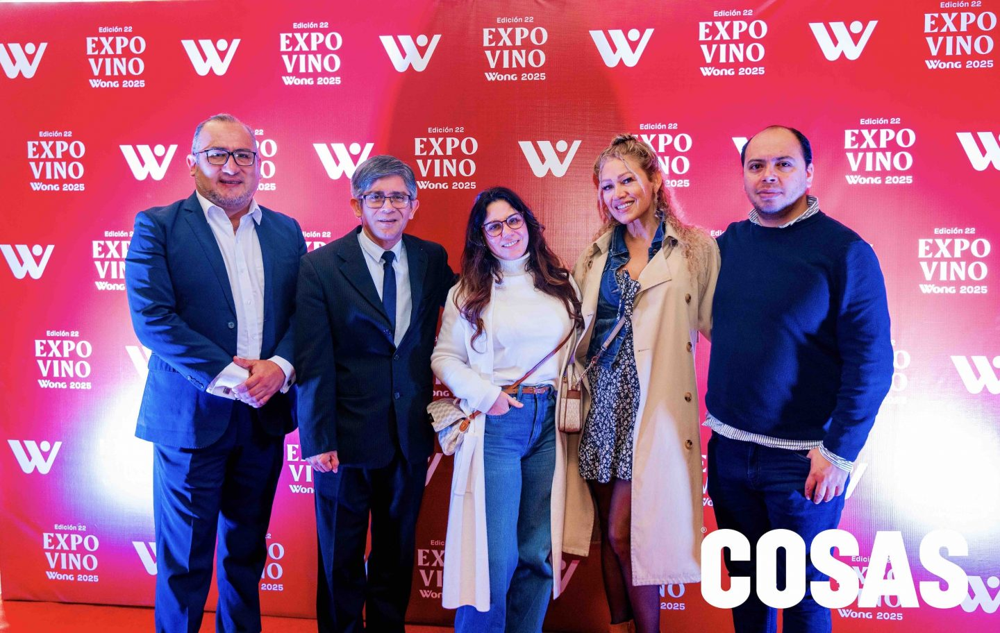
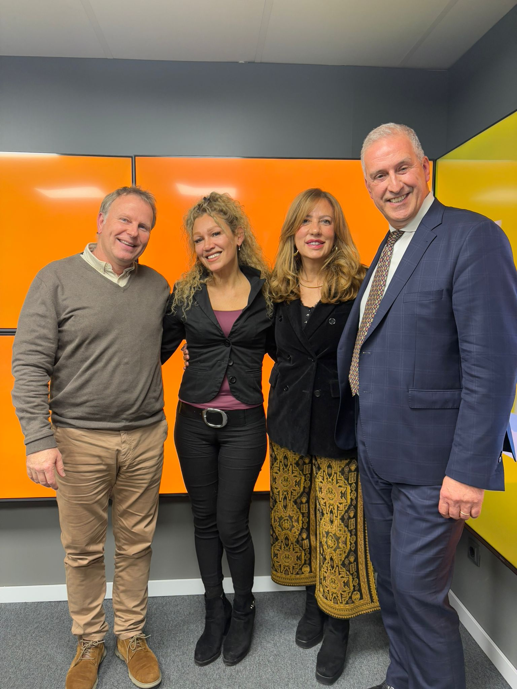
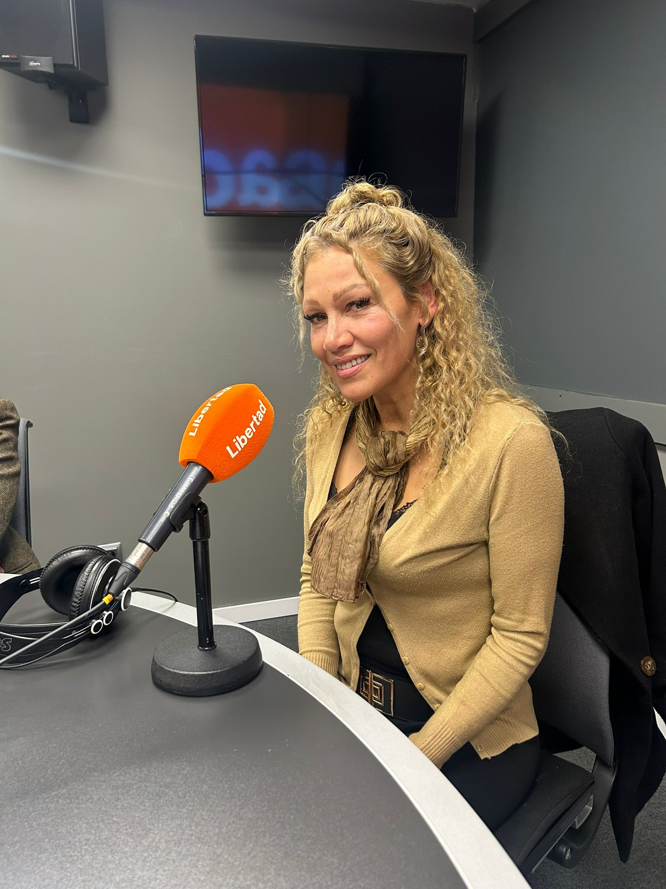
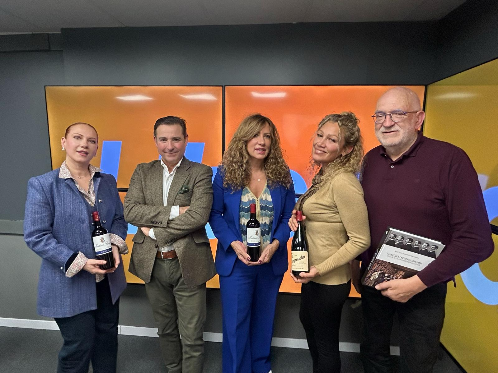
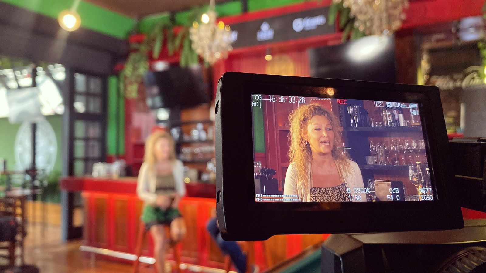
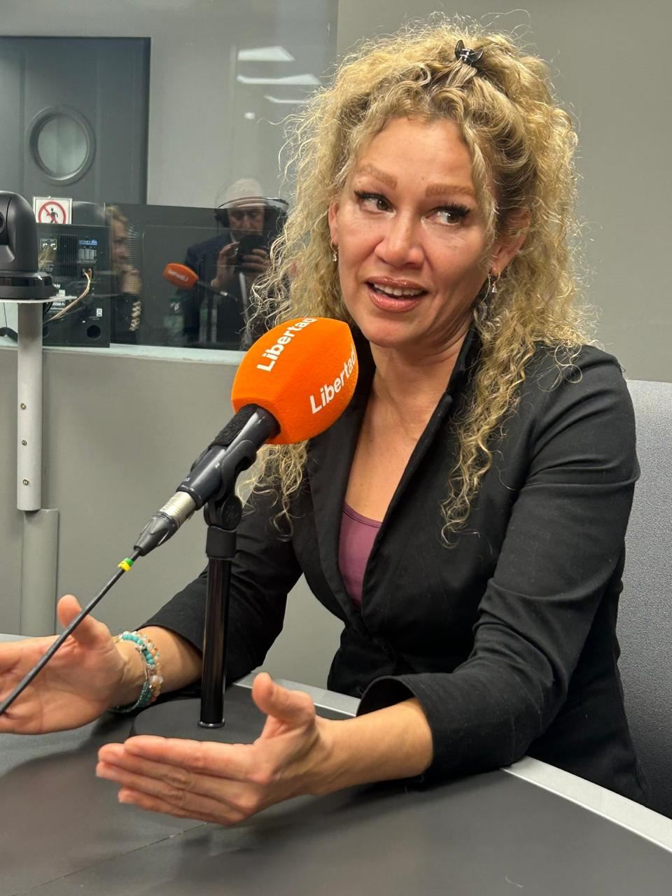
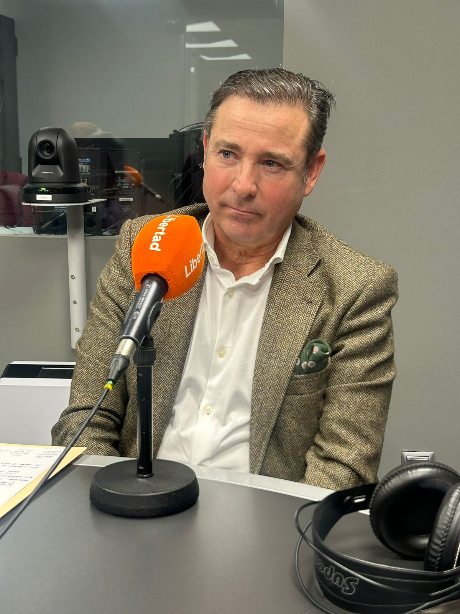

Conversaciones exclusivas con líderes y expertos del ecosistema transatlántico
Explora nuestras conversaciones organizadas por temática
Entrevistas con CEOs y directivos que han expandido sus negocios entre Europa y América.
Ver entrevistasHistorias inspiradoras de emprendedores que han conquistado mercados internacionales.
Ver entrevistasAnálisis y perspectivas de especialistas en comercio transatlántico y expansión internacional.
Ver entrevistasEntrevistas sobre talento global, reclutamiento internacional y gestión de equipos.
Ver entrevistasTestimonios de empresas que transformaron su negocio con nuestra ayuda.
Ver entrevistasConversaciones sobre las últimas tendencias en negocios internacionales.
Ver entrevistasMira nuestras conversaciones más recientes e inspiradoras
Alicia Wong comparte su visión sobre las oportunidades de negocio entre Europa y América Latina, su trayectoria empresarial y los retos del mercado transatlántico.

La Pelousse del Jockey Club del Perú se convirtió en punto de encuentro para miles de asistentes que celebraron la edición número 22 de Expovino Wong.

Alicia Wong comparte su experiencia sobre las posibilidades de la unión cultural entre Perú y España a través de Oportunidades EuroAmérica y su impacto en el comercio exterior.

Marco Antonio Merino Montani presenta esta entrevista especial en la que se abordan las conexiones empresariales entre Europa y América y las oportunidades del mercado transatlántico.

El CEO de AFP Integra analiza los retiros de fondos de pensiones, el impacto en el sistema financiero y las perspectivas para el futuro económico de la región.

Una selección de entrevistas del programa El Cliente en Canal N, donde se debaten las tendencias más relevantes del mundo empresarial internacional y la conexión EuroAmérica.
Momentos capturados durante nuestras entrevistas

